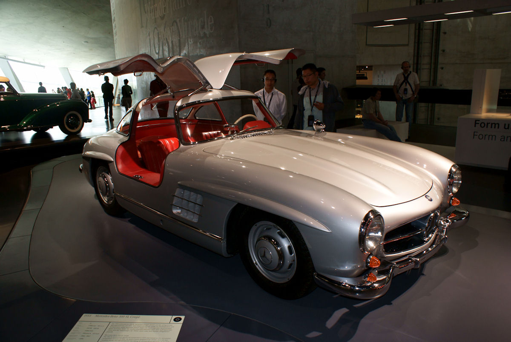

- Loading the route…

A taste of the technical tour: three cars, each with a mechanism shown working. A 21.5-litre record car that outran the aeroplanes of 1911, the Gullwing whose frame forced its doors upwards, and the most expensive car ever sold. Open a car, then switch to the museum photo to see where the mechanism sits under the bodywork.
See the three carsChecking offline mode…